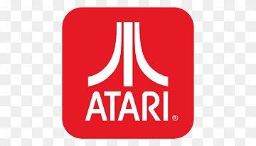
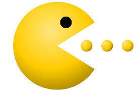

Sobre o Projeto
Este projeto usa o RetroBat, um sistema operacional projetado para emulação de jogos antigos, permitindo que você reviva a era dos jogos clássicos com uma interface moderna e intuitiva.
Consoles em Destaque

Atari
Consoles lendários que definiram uma geração.
Nintendo
Casa de Mario, Zelda e muitos clássicos inesquecíveis.
Jogos Clássicos

Super Mario Bros
Uma das franquias mais icônicas do mundo dos games.

Pac-Man
O clássico que dominou os arcades em todo o mundo.
Curiosidades sobre o RetroBat
- Compatível com Atari, Nintendo, Sega e muito mais.
- Oferece uma interface simples e intuitiva para iniciantes.